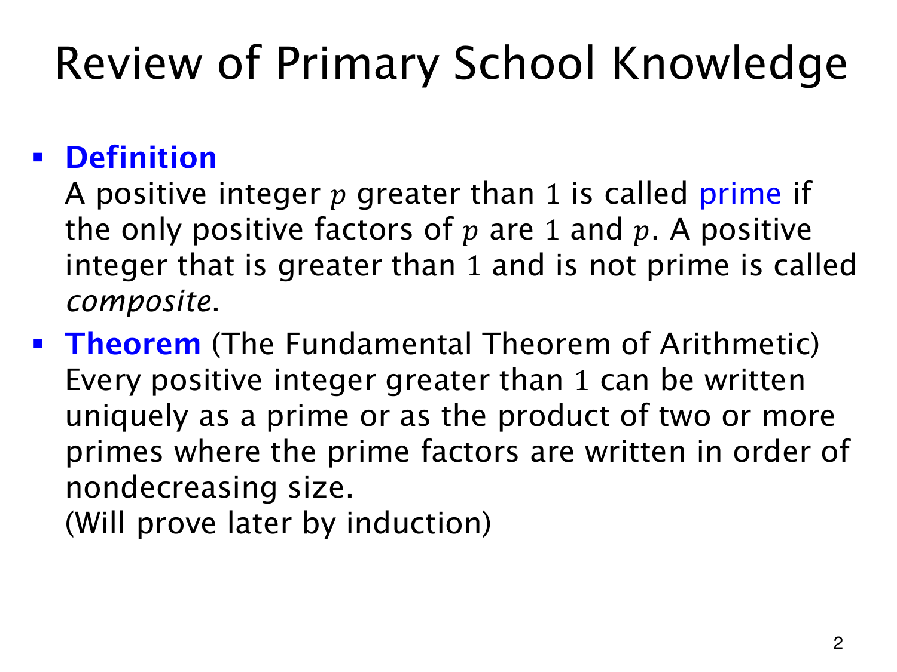

L1.13 · 第 2 页讲解原文
查看这一页课件

素因子分解的唯一性指什么
60=2⋅2⋅3⋅5=22⋅3⋅5。把因子改排为 3⋅2⋅5⋅2，并没有得到另一种本质不同的分解。
其中的因子都是 prime（素数、质数）：正整数 p>1 只有 1,p 两个正因子。2,3,5 都是素数；4=2⋅2、6=2⋅3 是 composite（合数），即大于 1 且非素数的正整数。1 两类都不属于。
Fundamental Theorem of Arithmetic（算术基本定理）说，每个大于 1 的正整数都可唯一写成素数的乘积。素数本身就是只含一个因子的情形。为排除顺序差异，课件将素因子按非递减顺序排列。
这个定理使公约数、公倍数都能通过素因子及其次数描述。它同时要求分解存在，而且素因子与次数唯一；几个算例只能示意，不能证明这两个普遍结论。课件在这里先使用定理，提示以后再用归纳相关方法证明。